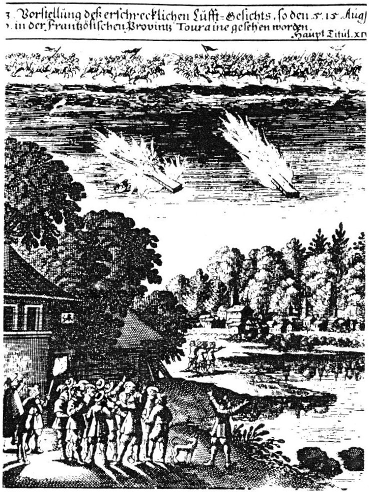

Les comètes - poutre enflammées - sont ici la manifestation sensible d'un combat céleste représenté en
haut de cette gravure allemande du 17ème Vorstellung dess erschrecklichen Lufft-Gesichts, so den 5.15.Aug. 1670. in der Frantzösischen Provintz Touraine gesehen worden < Homet, Jean-Marie: Le
retour de la comète, Imago, Paris, 1985, p. 37 < Deliyannis, Yannis: "17th century : Touraine (France) - German engraving (on the subject of burning rods)", Magonia
Exchange, 2007-03-25.
Le XVIIᵉ siècle marque la période dite "classique".
Il est marqué par une "révolution scientifique" qui se forge l'idée d'une science qui construit ses théories sur la
seule base des faits et de l'expérience, à travers :
la méthode expérimentale de Francis Bacon
les observations instrumentées de Galilée
l'ardoise vierge de John Locke avant l'expérience du monde